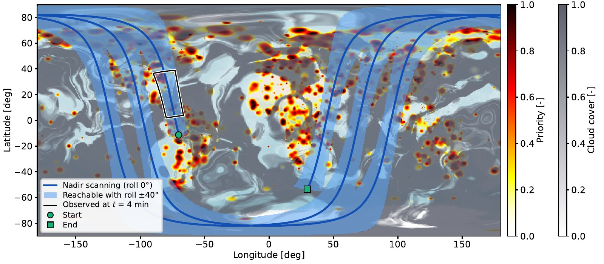
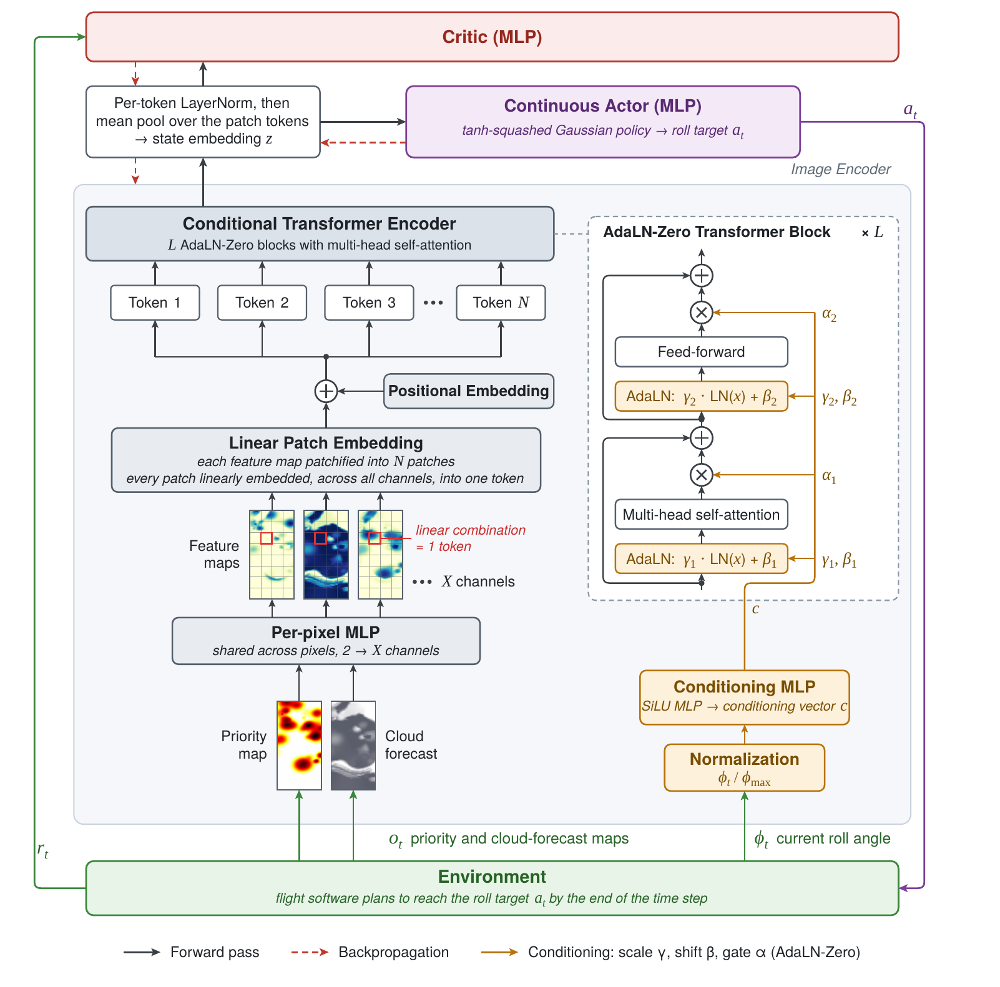
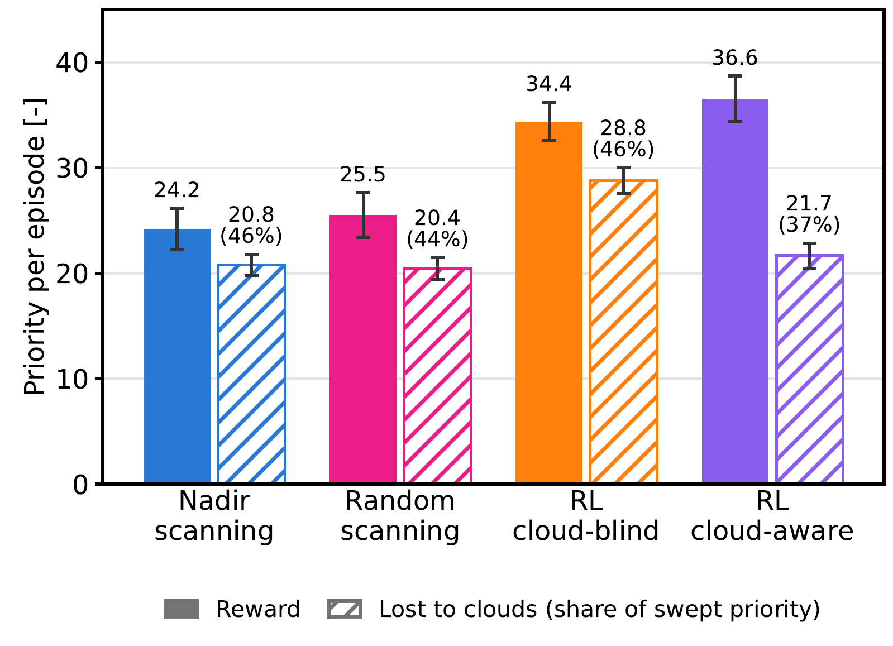

Medium-resolution imagers such as Landsat and Sentinel-2 scan at nadir, so their coverage is dictated by the orbit: a region off the ground track waits days for the next pass. Rolling the scan line across track widens the ground reachable on a pass to a corridor about 1,500 km wide, so an event hundreds of kilometers away can be imaged now. There is then no list of targets to sequence: the value of the ground is a continuous priority map, the clouds are a forecast map, and the decision is a continuous roll angle.
We propose a vision-transformer-based RL policy that reads the priority and the cloud forecast of the corridor ahead as an image, with one token per area instead of one per target, conditioned on the current roll angle. Under clouds, it earns 51% more than nadir scanning, and the share of its sweep lost to clouds drops from 46% to 37%.

The priority map is the union of 1,000 to 2,000 hot spots, half of them on coastal land. The synthetic cloud cover follows the cloud fractions observed by MODIS, and an image counts only where the cloud fraction is below 0.65, which leaves roughly half of the priority under clear sky.
The problem is a partially observable Markov decision process with decisions every 120 s. The action is a roll target, which the attitude controller reaches by the end of the step at a bounded rate. The reward is the priority swept under clear sky during the step; ground already swept earns nothing again. The satellite never sees the true clouds, only a forecast with a spatially correlated error, and never sees the maps globally: it observes the corridor it will overfly in the next 10 minutes.


Two policies share the architecture: a cloud-blind one trained without clouds on the priority channel alone, and a cloud-aware one trained under clouds on both channels. They are compared with nadir scanning and random scanning, all evaluated under clouds on the same 100 scenarios.
Nadir scanning loses 46% of what it sweeps to clouds. The cloud-blind policy steers toward high priority and earns 42% more than nadir scanning, but loses the same share to clouds. The cloud-aware policy earns 51% more than nadir scanning and 6% more than the cloud-blind policy, and loses only 37% to clouds.
The policy is being extended with the battery and reaction wheel constraints of the strip imaging work, and its sweeps will cue the strip imaging satellites in the tip-and-cue constellation.